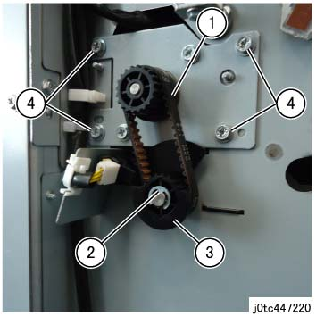
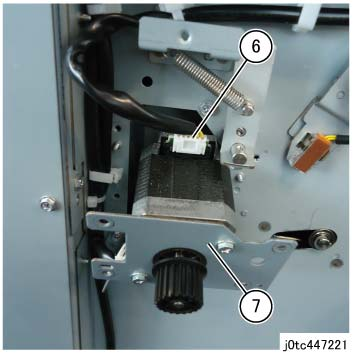

REP 47.32.1 前面 Dust 平均值 电机组件 
参考 PL:PL 47.32
Removal

执行IOT关机步骤. 确认电源已关闭并拔掉电源插头.
拆卸 纸张 输出 选件 连接到 the TCBM.
拆卸 右侧 Hand 下方 盖板 组件. (PL 47.2)
拆卸 前面 Dust 平均值 电机组件.
拆卸皮带 (Dust 平均值 电机). (图 1)
拆卸E型卡环. (图 1)
拆卸 桨轮 Pulley. (图 1)
拆卸螺钉（x4）. (图 1)

(图 1) tc447220
拉出 the 前面 Dust 平均值 电机组件 toward you.
拆卸 连接器. (图 2)
拆卸 前面 Dust 平均值 电机组件. (图 2)

(图 2) tc447221